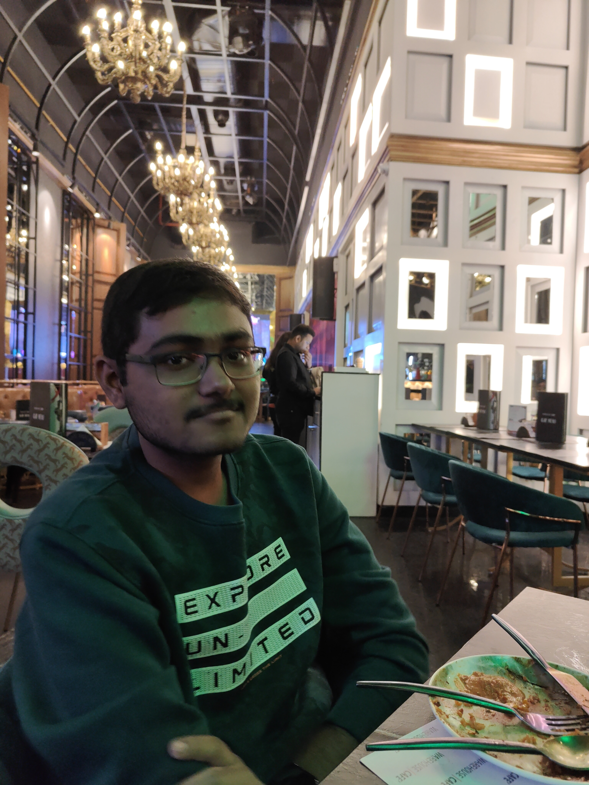
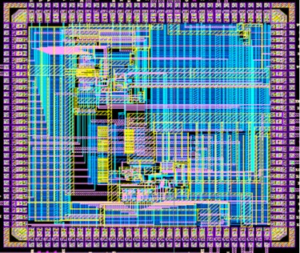
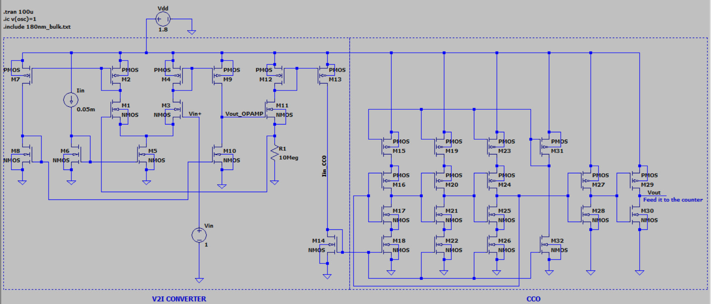

About Me
|
|

|
I am Saptashwa Bhattacharjee, a senior undergraduate student in the
Department of Electronics and Electrical Communication Engineering at the
Indian Institute of Technology (IIT) Kharagpur.
I was born on 24th of August 2002 in a small town named Malda in
the state of West Bengal, India. Born in a lower-middle-class family, I heard
about the financial crisis, my elders had to endure. My eldest uncle, an exceptional
student received an offer from medical school for undergraduate studies. However,
an intense financial crisis prevented him from seeking admission. His paramount
sacrifice had a profound impact on my development, and his grief to date has made me
recognize the value of education.
I have been fascinated by MOSFETs since I was introduced to it in my 2nd year of
undergraduate study and decided to dig deeper into it. I started by reading the book
"Microelectronics" and then continued exploring the next book in the series: "Design of
Analog CMOS Integrated Circuits" series by Behzad Razavi. Following this, I was thoroughly trained
in Cadence in the Advanced VLSI lab.
My area of interest is Mixed Signal IC Design, Analog and Digital Electronic Circuits with a particular focus
on oscillators, PLL, and making designs that are radiation hardened for space applications.
A few days back, an institute lecture organized by the Office of International Relations hosted Professor T. Venkatesan
of the University of Oklahoma on "Recent Advances in Memristors for Neuromorphic Circuits." From then on, I got
interested in this and thought that I could learn about it, explore it, and work in this domain. I read the first-ever
paper about memristor that L. Chua published in IEEE. I feel that the memristor is a relatively new concept, with many
applications like memristor-based memory design still untapped.
|
|

Guide : Professor Mrigank Sharad
Indian Institute of Technology Kharagpur
My work focuses on designing a novel Voltage Controlled Oscillator for Indian
Space Research Organisation (ISRO) which can work for a frequency range of about 500MHz to 1.5GHz for a
range of control voltages from 0 to 1.8V. Several different schemes were implemented such as using pmos input device,
nmos input device, using native nmos. I tried using mimcap which has higher capacitance per unit area as compared to moscap.
Apart from these, I also has to make it radiation hardened by design (RHBD) to tackle Single effect events (SEE) by dividing
the each stage into several layers. I designed the enitre layout in Cadence Layout Suite and checked DRC and LVS.
I also extracted parasitic capacitances using PEX simulation. After this, the post-layout simulation was carried out which
showed some degradation in performace as compared to the theoritical frequency range. The layout has been modified
thereafter. Pad Integration was also done. The design is currently ready for fabrication.

Guide : Professor Mrigank Sharad
Indian Institute of Technology Kharagpur
Designed a transistor level schematic in LTSpice using 180nm predictive technology model. A cascode 2 stage
OP-AMP with a open loop gain of around 10000 and a closed loop gain( using capacitive feedback) of 100. After this,
a Voltage to Current converter has been made which converts the output voltage of the OP-AMP into current. this
current serves as the input of the current controlled oscillator (CCO). The disgned CCO is a currret starved inverter
configuration. The output of the CCO us digital in nature with a linear current verses frequency plot for a
frequency upto 13MHz. The output of the CCO has been fed to a comparator to obtain a rectangular waveform with full
swing from 0 to 1.8V. This digital waveform goes to a counter which counts the number of pulses in a specific period.
Guide : Professor Mrigank Sharad
Indian Institute of Technology Kharagpur